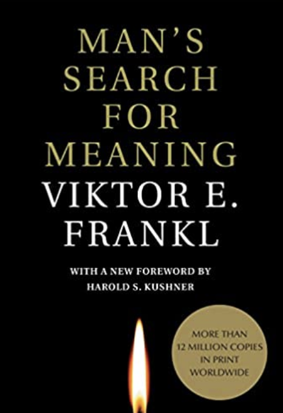

Man's search for meaning by Victor Frankel

We needed to stop asking about the meaning of life, and instead to think of ourselves as those who were being questioned by life-daily and hourly. Our answer must consist not in talk and meditation, but in right action and in right conduct. Life ultimately means taking the responsibility to find the right answer to its problems and to fulfill the tasks which it constantly sets for each individual.
When Man's Search for Meaning was first published in 1959, it was hailed by Carl Rogers as "one of the outstanding contributions to psychological thought in the last fifty years." Now, more than forty years and 4 million copies later, this tribute to hope in the face of unimaginable loss has emerged as a true classic. Man's Search for Meaning--at once a memoir, a self-help book, and a psychology manual-is the story of psychiatrist Viktor Frankl's struggle for survival during his three years in Auschwitz and other Nazi concentration camps. Yet rather than "a tale concerned with the great horrors," Frankl focuses in on the "hard fight for existence" waged by "the great army of unknown and unrecorded." - Taken from Amazon.com